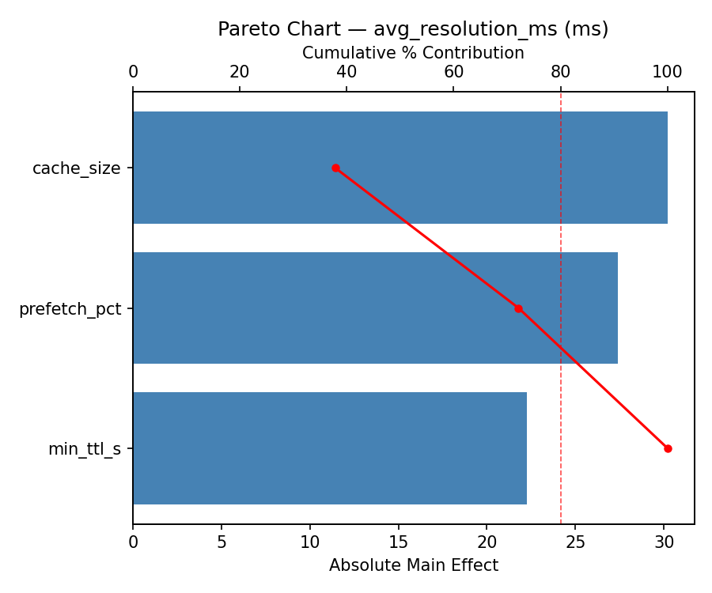
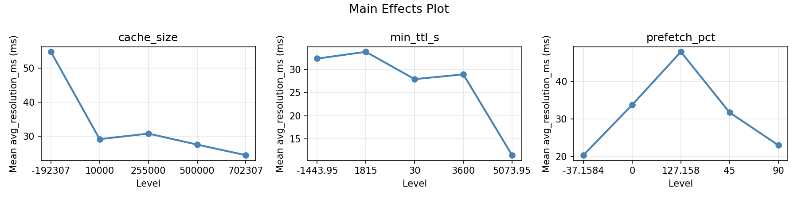
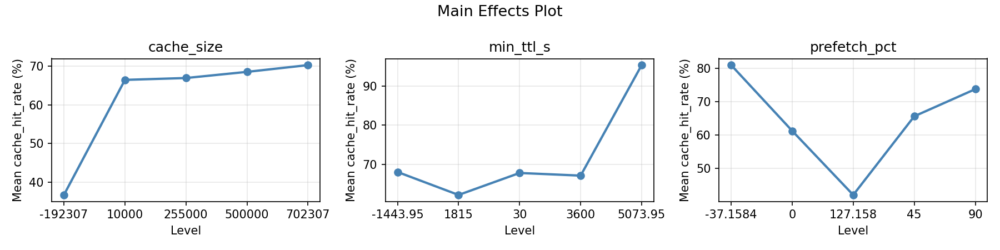
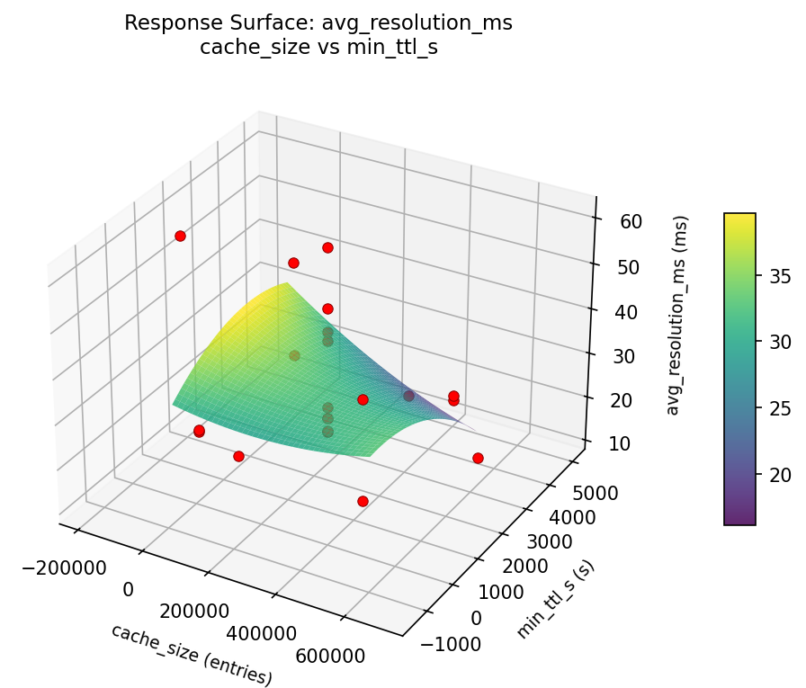
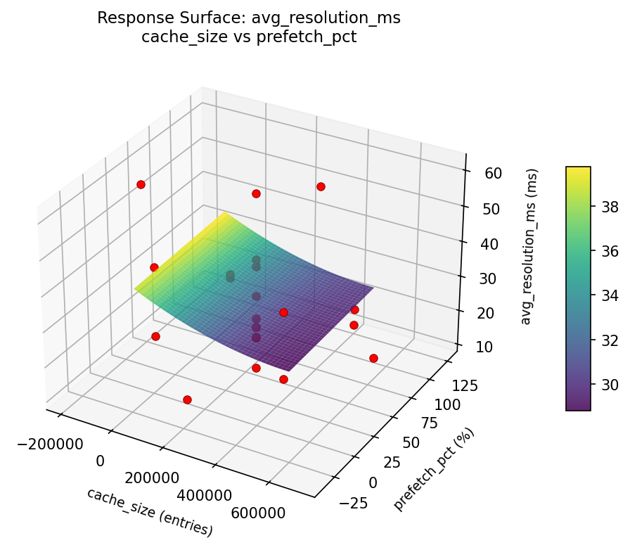
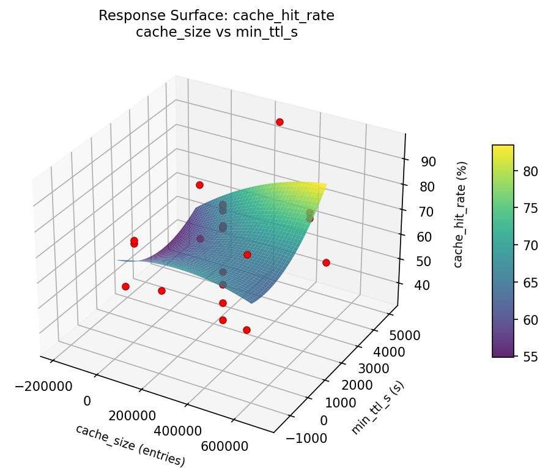
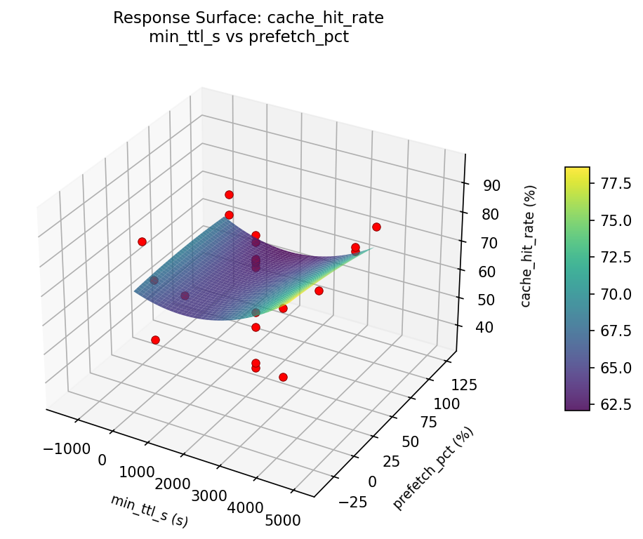

Summary
This experiment investigates dns resolver caching. Central Composite design for DNS cache size, TTL override, and prefetch threshold for resolution time.
The design varies 3 factors: cache size (entries), ranging from 10000 to 500000, min ttl s (s), ranging from 30 to 3600, and prefetch pct (%), ranging from 0 to 90. The goal is to optimize 2 responses: avg resolution ms (ms) (minimize) and cache hit rate (%) (maximize). Fixed conditions held constant across all runs include resolver = unbound, dnssec = on.
A Central Composite Design (CCD) was selected to fit a full quadratic response surface model, including curvature and interaction effects. With 3 factors this produces 22 runs including center points and axial (star) points that extend beyond the factorial range.
Quadratic response surface models were fitted to capture potential curvature and factor interactions. The RSM contour plots below visualize how pairs of factors jointly affect each response.
Key Findings
For avg resolution ms, the most influential factors were prefetch pct (48.9%), min ttl s (29.2%), cache size (22.0%). The best observed value was 11.5 (at cache size = 255000, min ttl s = -1443.95, prefetch pct = 45).
For cache hit rate, the most influential factors were prefetch pct (41.1%), min ttl s (32.3%), cache size (26.7%). The best observed value was 95.3 (at cache size = 255000, min ttl s = -1443.95, prefetch pct = 45).
Recommended Next Steps
- Run confirmation experiments at the predicted optimal settings to validate the model.
- Consider whether any fixed factors should be varied in a future study.
Experimental Setup
Factors
| Factor | Low | High | Unit |
|---|
cache_size | 10000 | 500000 | entries |
min_ttl_s | 30 | 3600 | s |
prefetch_pct | 0 | 90 | % |
Fixed: resolver = unbound, dnssec = on
Responses
| Response | Direction | Unit |
|---|
avg_resolution_ms | ↓ minimize | ms |
cache_hit_rate | ↑ maximize | % |
Configuration
{
"metadata": {
"name": "DNS Resolver Caching",
"description": "Central Composite design for DNS cache size, TTL override, and prefetch threshold for resolution time"
},
"factors": [
{
"name": "cache_size",
"levels": [
"10000",
"500000"
],
"type": "continuous",
"unit": "entries"
},
{
"name": "min_ttl_s",
"levels": [
"30",
"3600"
],
"type": "continuous",
"unit": "s"
},
{
"name": "prefetch_pct",
"levels": [
"0",
"90"
],
"type": "continuous",
"unit": "%"
}
],
"fixed_factors": {
"resolver": "unbound",
"dnssec": "on"
},
"responses": [
{
"name": "avg_resolution_ms",
"optimize": "minimize",
"unit": "ms"
},
{
"name": "cache_hit_rate",
"optimize": "maximize",
"unit": "%"
}
],
"settings": {
"operation": "central_composite",
"test_script": "use_cases/50_dns_resolver_caching/sim.sh"
}
}
Experimental Matrix
The Central Composite Design produces 22 runs. Each row is one experiment with specific factor settings.
| Run | cache_size | min_ttl_s | prefetch_pct |
|---|
| 1 | 255000 | 1815 | 45 |
| 2 | 500000 | 30 | 90 |
| 3 | 10000 | 3600 | 0 |
| 4 | 255000 | 5073.95 | 45 |
| 5 | 255000 | 1815 | 45 |
| 6 | -192307 | 1815 | 45 |
| 7 | 255000 | 1815 | -37.1584 |
| 8 | 255000 | 1815 | 45 |
| 9 | 500000 | 3600 | 0 |
| 10 | 702307 | 1815 | 45 |
| 11 | 255000 | 1815 | 45 |
| 12 | 255000 | -1443.95 | 45 |
| 13 | 255000 | 1815 | 45 |
| 14 | 10000 | 30 | 90 |
| 15 | 255000 | 1815 | 45 |
| 16 | 500000 | 30 | 0 |
| 17 | 255000 | 1815 | 127.158 |
| 18 | 500000 | 3600 | 90 |
| 19 | 255000 | 1815 | 45 |
| 20 | 10000 | 30 | 0 |
| 21 | 10000 | 3600 | 90 |
| 22 | 255000 | 1815 | 45 |
Step-by-Step Workflow
1
Preview the design
$ python doe.py info --config use_cases/50_dns_resolver_caching/config.json
2
Generate the runner script
$ python doe.py generate --config use_cases/50_dns_resolver_caching/config.json \
--output use_cases/50_dns_resolver_caching/results/run.sh --seed 42
3
Execute the experiments
$ bash use_cases/50_dns_resolver_caching/results/run.sh
4
Analyze results
$ python doe.py analyze --config use_cases/50_dns_resolver_caching/config.json
5
Get optimization recommendations
$ python doe.py optimize --config use_cases/50_dns_resolver_caching/config.json
6
Generate the HTML report
$ python doe.py report --config use_cases/50_dns_resolver_caching/config.json \
--output use_cases/50_dns_resolver_caching/results/report.html
Features Exercised
| Feature | Value |
|---|
| Design type | central_composite |
| Factor types | continuous (all 3) |
| Arg style | double-dash |
| Responses | 2 (avg_resolution_ms ↓, cache_hit_rate ↑) |
| Total runs | 22 |
Analysis Results
Generated from actual experiment runs using the DOE Helper Tool.
Response: avg_resolution_ms
Top factors: prefetch_pct (48.9%), min_ttl_s (29.2%), cache_size (22.0%).
Pareto Chart

Main Effects Plot

Response: cache_hit_rate
Top factors: prefetch_pct (41.1%), min_ttl_s (32.3%), cache_size (26.7%).
Pareto Chart

Main Effects Plot

Response Surface Plots
3D surfaces fitted with quadratic RSM. Red dots are observed data points.
avg resolution ms cache size vs min ttl s

avg resolution ms cache size vs prefetch pct

avg resolution ms min ttl s vs prefetch pct

cache hit rate cache size vs min ttl s

cache hit rate cache size vs prefetch pct

cache hit rate min ttl s vs prefetch pct

Full Analysis Output
=== Main Effects: avg_resolution_ms ===
Factor Effect Std Error % Contribution
--------------------------------------------------------------
prefetch_pct 37.7000 2.7633 48.9%
min_ttl_s 22.5000 2.7633 29.2%
cache_size 16.9750 2.7633 22.0%
=== Summary Statistics: avg_resolution_ms ===
cache_size:
Level N Mean Std Min Max
------------------------------------------------------------
-192307 1 24.5000 0.0000 24.5000 24.5000
10000 4 37.3750 16.2674 23.4000 54.7000
255000 12 29.1167 13.7361 11.5000 60.9000
500000 4 33.0500 9.7196 24.5000 42.2000
702307 1 20.4000 0.0000 20.4000 20.4000
min_ttl_s:
Level N Mean Std Min Max
------------------------------------------------------------
-1443.95 1 20.1000 0.0000 20.1000 20.1000
1815 12 27.6333 13.0846 11.5000 60.9000
30 4 31.8500 15.2452 23.4000 54.7000
3600 4 38.5750 10.4404 23.6000 47.8000
5073.95 1 42.6000 0.0000 42.6000 42.6000
prefetch_pct:
Level N Mean Std Min Max
------------------------------------------------------------
-37.1584 1 23.2000 0.0000 23.2000 23.2000
0 4 35.8750 14.8068 23.6000 54.7000
127.158 1 60.9000 0.0000 60.9000 60.9000
45 12 25.8500 9.5325 11.5000 44.3000
90 4 34.5500 12.2946 23.4000 47.8000
=== Main Effects: cache_hit_rate ===
Factor Effect Std Error % Contribution
--------------------------------------------------------------
prefetch_pct 37.8000 3.3890 41.1%
min_ttl_s 29.7000 3.3890 32.3%
cache_size 24.5750 3.3890 26.7%
=== Summary Statistics: cache_hit_rate ===
cache_size:
Level N Mean Std Min Max
------------------------------------------------------------
-192307 1 71.4000 0.0000 71.4000 71.4000
10000 4 56.4250 19.8376 36.7000 73.9000
255000 12 68.9250 16.4297 35.0000 95.3000
500000 4 61.3500 10.7469 49.8000 70.7000
702307 1 81.0000 0.0000 81.0000 81.0000
min_ttl_s:
Level N Mean Std Min Max
------------------------------------------------------------
-1443.95 1 79.1000 0.0000 79.1000 79.1000
1815 12 70.9167 15.3412 35.0000 95.3000
30 4 62.7000 17.3774 36.7000 73.1000
3600 4 55.0750 13.5817 42.0000 73.9000
5073.95 1 49.4000 0.0000 49.4000 49.4000
prefetch_pct:
Level N Mean Std Min Max
------------------------------------------------------------
-37.1584 1 72.8000 0.0000 72.8000 72.8000
0 4 58.8750 16.9930 36.7000 73.9000
127.158 1 35.0000 0.0000 35.0000 35.0000
45 12 72.6417 12.7549 49.4000 95.3000
90 4 58.9000 15.3764 42.0000 73.1000
Optimization Recommendations
=== Optimization: avg_resolution_ms ===
Direction: minimize
Best observed run: #18
cache_size = 255000
min_ttl_s = -1443.95
prefetch_pct = 45
Value: 11.5
RSM Model (linear, R² = 0.1117, Adj R² = -0.0364):
Coefficients:
intercept +30.7273
cache_size -3.4068
min_ttl_s +1.2318
prefetch_pct -3.7058
RSM Model (quadratic, R² = 0.4422, Adj R² = 0.0238):
Coefficients:
intercept +32.5352
cache_size -3.4068
min_ttl_s +1.2318
prefetch_pct -3.7058
cache_size*min_ttl_s -9.1750
cache_size*prefetch_pct +0.6000
min_ttl_s*prefetch_pct -1.0250
cache_size^2 +2.0810
min_ttl_s^2 -4.1889
prefetch_pct^2 -0.6040
Curvature analysis:
min_ttl_s coef=-4.1889 concave (has a maximum)
cache_size coef=+2.0810 convex (has a minimum)
prefetch_pct coef=-0.6040 concave (has a maximum)
Notable interactions:
cache_size*min_ttl_s coef=-9.1750 (antagonistic)
min_ttl_s*prefetch_pct coef=-1.0250 (antagonistic)
cache_size*prefetch_pct coef=+0.6000 (synergistic)
Predicted optimum (from quadratic model):
cache_size = 10000
min_ttl_s = 3600
prefetch_pct = 0
Predicted value: 48.9677
Model quality: Weak fit — consider adding center points or using a different design.
Factor importance:
1. cache_size (effect: 22.0, contribution: 36.4%)
2. min_ttl_s (effect: 20.8, contribution: 34.4%)
3. prefetch_pct (effect: 17.6, contribution: 29.2%)
=== Optimization: cache_hit_rate ===
Direction: maximize
Best observed run: #18
cache_size = 255000
min_ttl_s = -1443.95
prefetch_pct = 45
Value: 95.3
RSM Model (linear, R² = 0.1258, Adj R² = -0.0199):
Coefficients:
intercept +65.9364
cache_size +4.5592
min_ttl_s -1.2791
prefetch_pct +4.8049
RSM Model (quadratic, R² = 0.4977, Adj R² = 0.1210):
Coefficients:
intercept +63.1679
cache_size +4.5592
min_ttl_s -1.2791
prefetch_pct +4.8049
cache_size*min_ttl_s +10.5750
cache_size*prefetch_pct +0.7750
min_ttl_s*prefetch_pct +1.1000
cache_size^2 -3.0458
min_ttl_s^2 +6.2542
prefetch_pct^2 +0.9442
Curvature analysis:
min_ttl_s coef=+6.2542 convex (has a minimum)
cache_size coef=-3.0458 concave (has a maximum)
prefetch_pct coef=+0.9442 convex (has a minimum)
Notable interactions:
cache_size*min_ttl_s coef=+10.5750 (synergistic)
min_ttl_s*prefetch_pct coef=+1.1000 (synergistic)
cache_size*prefetch_pct coef=+0.7750 (synergistic)
Predicted optimum (from quadratic model):
cache_size = 500000
min_ttl_s = 3600
prefetch_pct = 90
Predicted value: 87.8555
Model quality: Weak fit — consider adding center points or using a different design.
Factor importance:
1. min_ttl_s (effect: 32.4, contribution: 39.1%)
2. cache_size (effect: 30.6, contribution: 36.9%)
3. prefetch_pct (effect: 19.9, contribution: 24.0%)